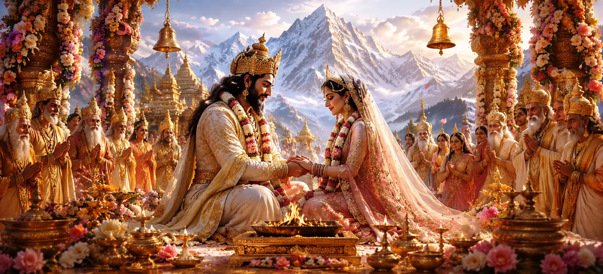

This chapter narrates the sacred marriage of King Himālaya, the lord of the mountains, and the virtuous Menā. Their divine union was destined to play a vital role in the cosmic plan, for from this blessed marriage would eventually be born Goddess Pārvatī, the future consort of Lord Shiva. The chapter highlights the sanctity of marriage, divine destiny, and the preparation for a great spiritual mission.
King Himālaya was revered among all mountains for his strength, purity, and unwavering righteousness. His majestic peaks touched the heavens, and sages performed their austerities upon his sacred slopes. He was regarded as a noble guardian of the natural world and a devotee of divine truth.
Menā was renowned for her beauty, wisdom, and devotion. Her gentle nature and noble character made her worthy of becoming the queen of the mountain kingdom. She possessed deep faith and a compassionate heart, qualities that would later influence the upbringing of Goddess Pārvatī.
The marriage of Himālaya and Menā was celebrated by sages, celestial beings, and divine powers. Their union was not merely a worldly event but part of a divine plan that would contribute to the welfare of the universe. Blessings flowed from all directions as the sacred ceremony was performed.
Although the marriage appeared as a joyful royal celebration, the gods knew that a greater destiny awaited this divine couple. In the future, their household would become the birthplace of Pārvatī, whose devotion and union with Lord Shiva would shape the course of cosmic history.
Marriage is a divine partnership founded upon virtue and duty.
Himālaya exemplifies strength guided by wisdom and righteousness.
Great events often begin through seemingly simple circumstances.
The gods showered blessings upon the newly married couple, praying that their household would become a source of virtue, happiness, and divine purpose. These blessings foreshadowed the sacred role they would play in the future.
This marriage laid the foundation for one of the most important narratives in the Shiva Purana. Through the union of Himālaya and Menā, the stage was set for the appearance of Pārvatī and the continuation of the divine story of Shiva and Shakti.
This chapter teaches that every sacred relationship has a higher purpose. Through virtue, devotion, and mutual respect, ordinary lives can become instruments of divine will and contribute to a greater spiritual destiny.
The marriage of Himālaya and Menā exemplified the ideal balance of virtue, wisdom, and responsibility. Both were devoted to righteousness and dedicated to serving the welfare of others. Their union demonstrated how a harmonious relationship founded upon noble values can become a source of blessings for future generations.
The union of Himālaya and Menā marked the beginning of a sacred lineage destined to play a central role in the divine drama of the universe. From this blessed family would arise Goddess Pārvatī, whose devotion, penance, and union with Lord Shiva would become one of the most revered stories in Hindu tradition.
"From sacred unions arise destinies that shape the world."
Begin the sacred story of Parvati Khanda with the divine marriage of Himālaya and Menā. This blessed union lays the foundation for the future birth of Goddess Pārvatī. Continue to the next chapter to discover the events surrounding the sages and the curse bestowed upon Menā.